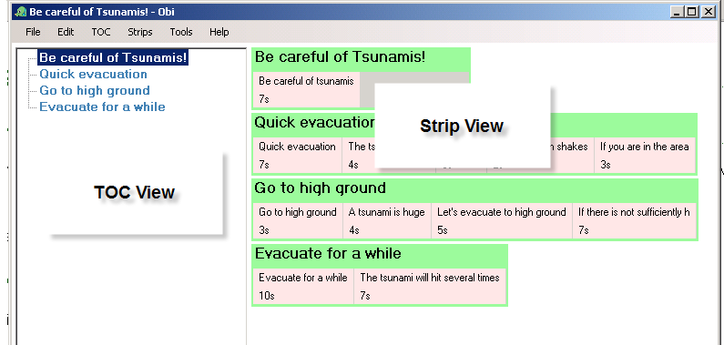
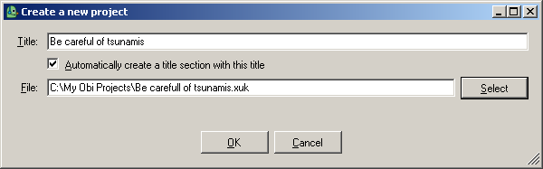
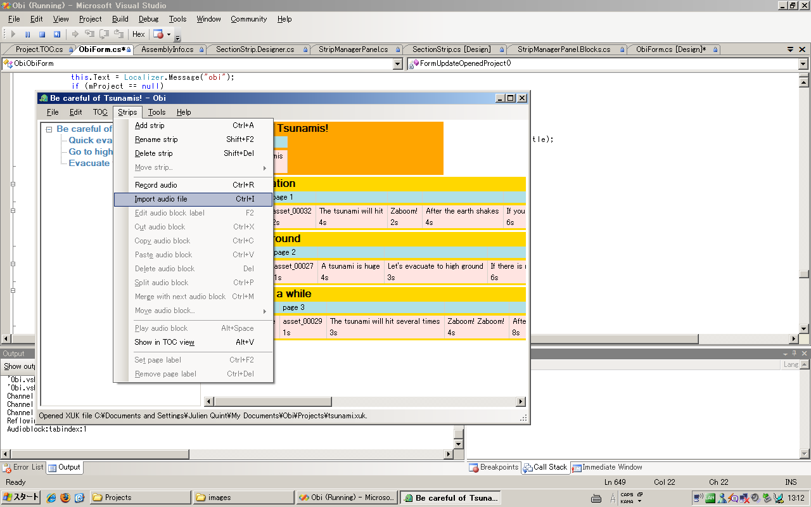
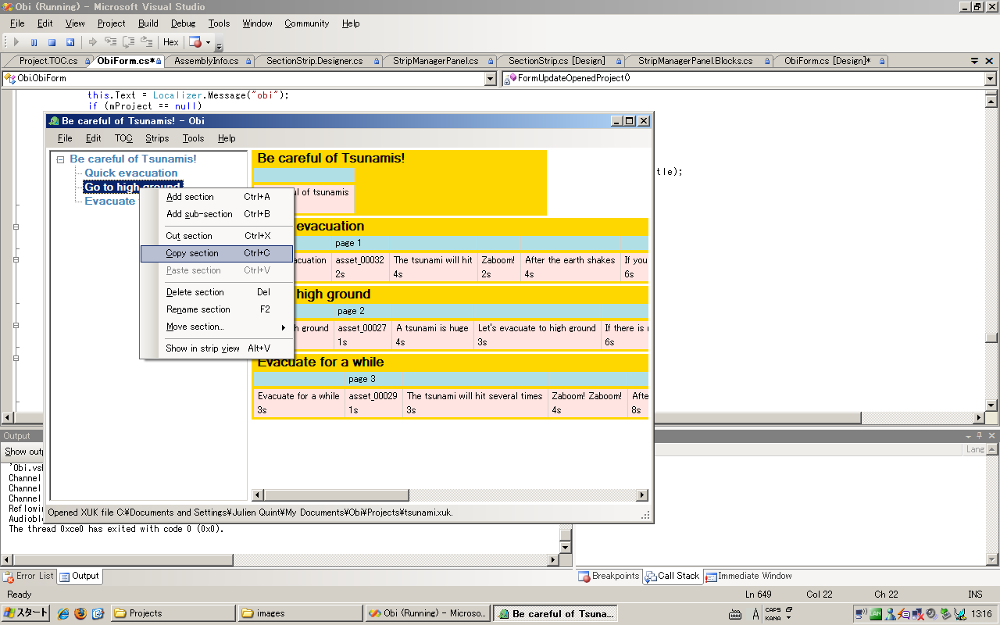
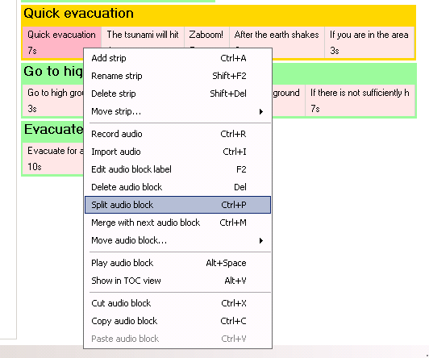
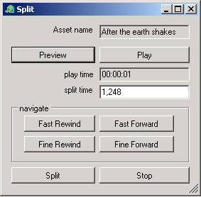

Obi Manual


This is the manual for Obi v0.5 (18th August 2005.)
Obi Manual - Table of Contents
Obi - DAISY/NISO DTB Production Tool
Obi Online - Community Help and Support
For further help and support on using Obi, please visit Obi online and the Urakawa project web site.
Getting Started
This section of the Obi manual contains a quicktrack introduction on how to use Obi. A more detailed description of Obi features and functions is available in the details section.
Main Window Overview
The main window of Obi (which is the one that opens when you start Obi) contains two parallel views of the project; the TOC View on the left side of the main window, and the Strip View on the right side of the main window.
Before we start our project, let's try to understand what these views have in common, and where they differ.

The TOC View
The TOC View can be understood as a Table of Contents for the project being recorded.
Using the TOC View you can navigate in the major structural elements of the project. Typically, this means that you move your current position to a certain section (or chapter if you will) of the DAISY DTB being recorded.
The TOC View is a tree, which means that a section (a node in the tree) can have children. In DTB terminology, this feature is used to describe that a certain section is a sub-section (or a child) of another section.
The TOC View also allows section editing, such as adding and removing sections.
The Strip View
The Strip View contains Strips. A strip represents a section in the DTB. This also means that each strip in the Strip view corresponds to one section in the TOC View.
The Strip View provides a more detailed view of the project. Here, you can navigate not only between the major sections of the book,
but also at a much more detailed level, namely among the blocks that are contained within each strip. We will learn more about blocks later.
Setting Preferences
The first thing to do before starting a new project, is to make sure that the system and project preferences are in order. Most important
is the configuration of the Audio device on your computer.
- Open Audio preferences and make sure the correct input and output device is selected
- Adjust the input and output volume using the Windows mixer
Create a New Project
Select New Project from the File Menu.
A dialog will appear that asks you to set the title of the project,
and where on your computer's hard drive to store project data.

Obird suggestion
Are you wondering what a XUK file is? I suggest that you read about the XUK File format in the glossary!
Record and Edit the Project
Recording
Once the new project has been created, you can start the recording process.
Select the Add section item in the TOC menu, and type the name of this section.
At this point, a new section has appeared in the TOC View, and a strip occurs in the Strip View.
Move to this section in the Strip View (by clicking on the strip in question, by tabbing to it, or be selecting the Show in Strip View menu item in the TOC menu.
Once the strip is selected, open the record dialog by selecting the Record audio menu item in the Strip menu.
The recording dialog is now listening to the audio input device. Once you press the Record button, recording will commence. Use the phrase marker button to create audio blocks during the recording.
Obird suggestion
All Obi functions and features have keyboard shortcuts! Learn more about them in the Keyboard shortcut table!
Importing audio
Besides recording live audio from your audio input device, you can also import existing audio files into a strip. Select the import audio file menu item in the Strip menu.

Section editing
Using either the TOC View or the Strip View, you can perform section level editing operations, such as add, cut, copy, delete, rename and move.
Read more about section editing in the details section.

Audio Block editing
Audio block editing is typically done after you have recorded some audio for a section. As an example, there may be a slight noise in the recording that you want to remove.
Or there may be an audio block that you want to split, or merge. Read more about audio block editing in the details section.

Save the Project
Once the recording session has finished, select the save project menu item from the file menu.
Obird suggestion
Saving your project at regular intervals during a long recording session is a good idea!
Note: the save project as command makes
a new copy of your project and audio files. When you select this command,
the project in its current state is saved in a different location and/or
under a different name, but you are still editing the same project. You
may think of this as a backup command.
Obi Windows - details
Main Window - TOC View
Section editing
- Add section
- Adds a new section following the section that is currently selected.
- Add sub-section
- Adds a new section as a child of the section that is currently selected.
- Cut section
- Cuts the currently selected section and puts it in the clipboard.
- Copy section
- Copies the currently selected section and puts the copy in the clipboard
- Paste section
- Pastes a section currently in the clipboard, following the section that is currently selected.
- Delete section
- Deletes the currently selected section.
- Rename section
- Enables renaming of the currently selected section. After invoking rename, type the new name.
- Move section up/down
- Moves the currently selected section up or down in relation to its sibling sections. This feature is used to reorder the main structural units (chapters) of the DTB.
- Move section in/out
- Changes the depth of the currently selected section. "Move in" effectively means "make sub-section".
Other functions in TOC View
- Show in Strip View
- Moves the cursor (and focus) to the strip in the strip view that corresponds to the currently selected section in the TOC View.
Main Window - Strip View
Strip editing
- Add strip
- Adds a new strip following the strip that is currently selected.
- Rename strip
- Enables renaming of the currently selected strip. After invoking rename, type the new name.
- Delete strip
- Deletes the currently selected strip.
- Move strip up/down
- Moves the currently selected strip up or down in relation to its sibling strips. This feature is used to reorder the main structural units (chapters) of the DTB.
Block editing
- Edit audio block label
- Edit the textual label of the currently selected audio block.
- Delete audio block
- Delete the currently selected audio block.
- Split audio block
- Opens the split dialog.
- Merge with next audio block
- Merges the currently selected audio block with the audio block that follows it. The result is that two audio blocks turns into one.
- Move audio block forward/backward
- Moves the currently selected audio block in relation to its sibling blocks. This will reorder the sequence of audio blocks within a strip.
- Cut audio block
- Cuts the currently selected audio block and puts it in the clipboard.
- Copy audio block
- Copies the currently selected audio block and puts the copy in the clipboard.
- Paste audio block
- Pastes an audio block currently in the clipboard, following the audio block that is currently selected.
Other functions in strip view
- Record audio
- Opens the recording dialog
- Import audio
- Opens the import audio dialog.
- Play audio block
- Opens the play dialog, and plays the currently selected audio block.
- Show in TOC View
- Moves the cursor (and focus) to the section in the TOC View that corresponds to the currently selected strip in the Strip View.
- Set page label
- A page label usually indicates a page number that can be inserted just
like in a print book. This is useful to include if you record a book that
exists in print. The page label appears on top of the audio block which
is usually the audio counterpart to the label.
- Remove page label
- Removes page label that was previously set.
Record Dialog
As the record dialog opens, Obi is already listening to the input device.
- Record
- Start the recording.
- Stop
- Stop the recording and close the dialog.
- Phrase marker
- Create a new Audio Block. This feature can be used during recording (i.e. without pressing stop.)
Play Dialog
When the play dialog opens, playback will start automatically.
- pause/play
- Pauses the playback, and rests at the current position. Pressing the same button again will resume playback.
- stop
- Stops playback and closes the play dialog.
Split Dialog
The split dialog is used to split one audio block into two.

- preview
- Listen to the audio that follows the current split position.
- back
- Go back to the current split position, and play from that position
- play/pause
- Play the entire audio block.
- fast rewind
- Move backward in time a large step.
- fast forward
- Move forward in time a large step.
- fine rewind
- Move backward in time a small step.
- fine forward
- Move forward in time a small step.
- current time
- Displays the current time position in the audio block.
- split time
- Displays the split time position in the audio block.
- split
- Performs the split operation and exits the dialog.
- stop
- Cancels the split operation and exists the dialog.
The metadata dialog allows editing of bibliographic metadata to be associated with the project.
It is strongly suggested that you take the time to fill in these fields in properly.
Metadata Dialog fields
- Title
- A name given to the resource. Typically, Title will be a name by which the resource is formally known.
- Author
- An entity primarily responsible for making the content of the resource. Examples of Creator include a person, an organization, or a service. Typically, the name of a Creator should be used to indicate the entity.
- Publisher
- An entity responsible for making the resource available. Examples of Publisher include a person, an organization, or a service. Typically, the name of a Publisher should be used to indicate the entity.
- Identifier
- An unambiguous reference to the resource within a given context.
- Language
- A language of the intellectual content of the resource.

Preferences Dialog
The preferences dialog contains various settings relating to the project and the system. Obi will remember these settings between session, in other words, when you restart Obi or your computer, these settings will remain as you left them.
Audio Preferences
The audio preferences tab allows to view and modify settings relating to audio recording and audio playback.
Audio Preferences fields
- Input device name
- Set the audio device to use for recording. This is the same as selecting a soundcard input port.
- Output device name
- Set the audio device to use for playback. This is the same as selecting a soundcard output port.
- Default sample rate
- Select the sample rate to use for recording. This field defaults to
44100, and normally, you can leave it at that. Under some circumstances (such as a very large book being recorded) you may want to change this setting to 22050.
- Default channels
- Select whether you want to record in
mono (one channel of audio) or stereo (two channels of audio). Normally, DAISY DTBs are recorded in mono.

Obird suggestion
Changing sample rate and number of channels in the middle of a project is not a very good idea!
Try to make your choice before you start recording in the project! Then try to stick to your choice!
Project Preferences
The project preferences tab allows to view and modify settings relating to an Obi project.
Project preferences fields
- Project identifier template
- Obi can autogenerate an identifier for your project. In this field, you can determine how the identifier should be generated.
You can add any characters that will occur everytime an identifier is generated, and combine these with a number of hash characters (#) that Obi will replace with numerals.
For example, if this field is set to obi_####, Obi will generate an identifier such as obi_9682.
- Default projects directory
- Select a directory on your computers harddrive that Obi will suggest as a project directory when you start a new project.

User Profile Dialog
User profile fields
- Full name
- Name of user.
- Organisation
- Organisation of the user.
- Language
- The language of the user (which is not necessarily the same as the language of the DTB being recorded!)

Glossary of Terms
Obird suggestion
If the word you are looking for does not exist in this glossary, I suggest that you have a look in the DAISY Knowledge Network.
- Audio Block
-
A term used in Obi to describe segments of audio. See also Block and Phrase.
- Block
-
A term used in Obi to describe the smallest content unit of the DTB being produced.
A block can for example be an Audio Block, in which case it is equivalent to a phrase.
Blocks are organised in Strips.
- DAISY
-
An acronym that stands for Digital Accessible Information SYstem.
Read more at the daisy.org introduction area.
- DAISY/NISO
-
A name used to describe the type of DTB produced by Obi, in other words, the particular standard specification used.
Read more at daisy.org standards area and the daisy.org introduction area.
- DTB
-
An acronym that stands for Digital Talking Book.
Read more at the daisy.org introduction area.
- Obird

- Obird is the Obi mascot. The Obird logo consists of a picture of Obirds green head, where she is wearing a headset with a microphone. Although Obird is a Parakeet, she can narrate very well.
- Phrase
-
A term used to describe a small segment of audio within a DAISY DTB.
A phrase is typically equivalent to a spoken sentence, or a part of a spoken sentence.
In Obi, a phrase is equivalent to an Audio Block.
- Section
-
A structural unit in the DTB being produced.
A section typically corresponds to a book chapter.
In Obi, sections are displayed and edited in the TOC View and in the Strip View.
- Strip
- A concept used in Obi to display the contents of a DTB section. Strips occur in the Strip View of the Obi main window.
- XUK File Format
- XUK is an acronym that stands for XML for Urakawa. This is a file format used while the DTB is under production. When you save the project, by default a XUK file is created. Once the DTB is ready for publishing, the XUK file format is converted into a DTB.
Keyboard Shortcut Table
How keyboard shortcut syntax works
In the table below, all keyboard shortcuts of Obi are described using a standard syntax.
The key components of this syntax are:
- Sequences of keys to be pressed are described using the comma sign
- For example, ALT,F means: First press and release the ALT key, then press and release the F key.
- Key combinations (i.e. keys to be pressed simultaneously) are described using the plus sign
- For example, ALT+F means: Press the ALT and F key simultaneously, and then release them.
Note: these shortcuts may change in subsequent versions of
Obi.
| Obi Main Menu |
| File Menu | ALT,F |
| Edit Menu | ALT,E |
| TOC Menu | ALT,C |
| Strips Menu | ALT,S |
| Tools Menu | ALT,T |
| Help Menu | ALT,H |
| File Menu |
| New Project | CTRL+N |
| Open Project | CTRL+O |
| Save Project | CTRL+S |
| Save Project as | CTRL+SHIFT+S |
| Discard Changes | CTRL+D |
| Close Project | CTRL+W |
| Exit | ALT+F4 |
| Dialogs and Windows |
| Open Record Dialog | CTRL+R |
| Open Help | F1 |
| Open Metadata dialog | ALT+M |
| Open Audio Preferences | ALT+A |
| Open Project Preferences | ALT+P |
| Open User Profile Dialog | ALT+U |
| General editing operations |
| Undo | CTRL+Z |
| Redo | CTRL+Y |
| Touch project | CTRL+T |
| Main view |
| Hide TOC View | ALT+T |
| Show TOC View | ALT+T |
| Show in Strip View | ALT+V |
| Show in TOC View | ALT+V |
| Section Editing |
| Add section | CTRL+A |
| Add sub-section | CTRL+B |
| Cut section | CTRL+SHIFT+X |
| Copy section | CTRL+SHIFT+C |
| Paset section | CTRL+SHIFT+V |
| Delete section | DEL |
| Rename section | F2 |
| Move Section Up | CTRL+SHIFT+UP |
| Move Section Down | CTRL+SHIFT+DOWN |
| Move Section In | CTRL+SHIFT+RIGHT |
| Move Section Out | CTRL+SHIFT+LEFT |
| Strip Editing |
| Add strip | CTRL+A |
| Rename strip | SHIFT+F2 |
| Delete strip | SHIFT+DEL |
| Move strip up | CTRL+SHIFT+UP |
| Move strip down | CTRL+SHIFT+DOWN |
| Audio Editing |
| Import audio file | CTRL+I |
| Edit audio block label | F2 |
| Cut audio block | CTRL+X |
| Copy audio block | CTRL+C |
| Paset audio block | CTRL+V |
| Split audio block | CTRL+P |
| Delete audio block | DEL |
| Merge with next audio block | CTRL+M |
| Move audio block forward | CTRL+RIGHT |
| Move audio block backward | CTRL+LEFT |
| Play audio block | ALT+Space |
| Page Labels |
| Set page label | CTRL+F2 |
| Remove page label | CTRL+DEL |